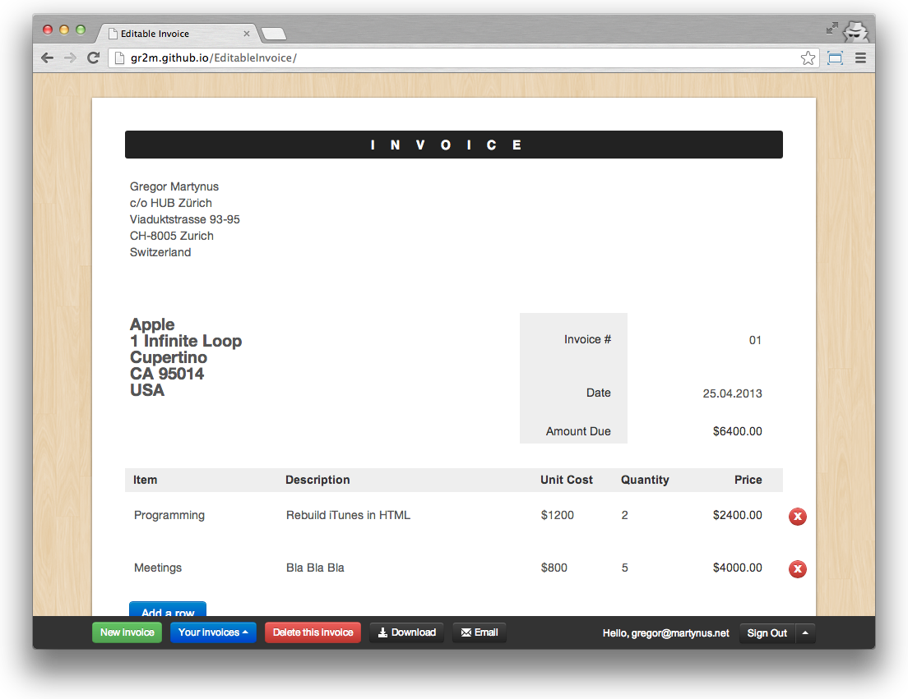

Hoodie
Hoodie adds features for user accounts, exporting the current invoice and sending it via multipart email.
Inspired by the wonderful TodoMVC project, that aims to help frontend developers selecting an MV* framework, we create noBackend example apps to help frontend developlers selecting a noBackend solution.
noBackend Invoice is based on work by Chris Coyer, who created the EditAbleInvoice as a proof of concept for a static HTML based application. It lets you edit and print an invoice. As it's HTML only, every frontend developer is capable to copy the files and adjust them to his/her own preference. But it has no support for typical backend features like user accounts, emails or exports.
We now add these features with noBackend solutions, meaning we add e.g. user accounts by writing frontend JavaScript code only: 
A noBackend solution provides JavaScript methods in the browser for typical backend tasks like user accounts, data persistence or emails. Find out more at nobackend.org/solutions
Hoodie adds features for user accounts, exporting the current invoice and sending it via multipart email.
remoteStorage provides per-user storage that the user gives the app permission to store/retreive documents from. Sockethub provides either per-user or per-app messaging and other back-end functionality.
open rs+sh invoice | remoteStorage website Sockethub website
There are many other noBackend solutions out there today. Help us by adding an implementation. Get in touch at @noBackend